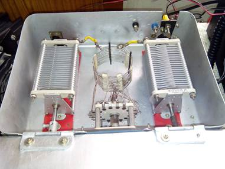

Home Station Equipments LOG Photos/Videos
VU6P Station Equipments
| Main operational rig will be ICOM
IC7100 and additionally, IC-718, Kenwood TS-550S and a SDR based on Peaberry
(VUSDR by VU2ZAZ), capable of all band operation (QRP 5 Watts). We may use
digital modes on higher bands.
Balun 4:1 (Red toroid) for connecting antenna tuner to 300 Ohm homebrew ladder line (with 320 electrical wire) and TV ribbon cable Balun 1:1 (Ferrite FT-200-60) for usign at the feed point of W8010 or Fan dipole. IC-2200H for VHF - If ducting is good, we could reach lot of VHF operators through VU2TCD repeater having a reach radius of up to 300 miles. |
|  |
|
|
| Multiband (40M, 20M and 10M fan dipole with coaxial cable balun was used in last year Lighthouse weekend activities. Had good results with it. This year this antenna will be used as spare. |
Hygain tape doublet antenna lying around for several years in my junkbox. Had to open it up and clean up the contacts. It is definitely vintage, came from military junk. I will be trying this antenna in this lighthouse event. Will probably use the 1:1 balun with this.
|
|
Try Morseit ringtone software for Android
Devices. Click Here for more details. Available in Google Play Store https://play.google.com/store/apps/details?id=com.vu3rgk.Morseit |
Home Station Equipments LOG Photos/Videos